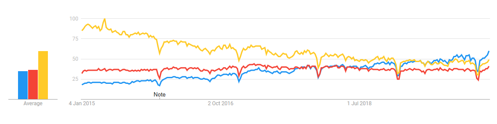

A report of Web Development course
S01
1- Did you before know about the techniques Git, GitHub, Markdown and/or GitHub Pages?
I know about Git and GitHub because in the first year we did a project and we connected it to GitHub. In the second year,I worked with GitHub desktop application because I found it more easier than using Git bash. However, I have never worked with GitHub pages before.
2- Have you ever created websites before?
I have never created websites before. However, I have worked a little bit with HTML and CSS before. So, I am familiar with some basics of HTML and CSS.
3- Briefly explain your experience and knowledge of web application development.
I have worked with HTML and CSS but a little bit. However, I studied Network Applications course which I learnt to work with backend and create servers and clients using Java.
4- What is your TIL for this course section?
In the first assignment, I learnt to use GitHub pages and to fork. In addition, I became more familiar with Git bash and create tags using git bash.
S02
1. Have you any previous experience of HTML, CSS and/or JavaScript?
I have some experience of HTML and CSS. However, I don't have any experience of JavaScript
2. Explain the role of HTML, CSS and JavaScript in web development.
HTML is used to create basic and simple webpages, CSS is used to style and decorate the HTML webpages and to make HTML webpage look better and nicer, and JavaScript is used to make webpages dynamic. It gives the user the ability to interact with webpages dynamiclly. HTML, CSS, and JavaScript work together as a frontend.
3. Give a brief explanation of how the browser, the HTTP protocol and the web server interacts.
The browser goes to the DNS server, and finds the real address of the server that the website lives on. The browser sends an HTTP request message to the server, asking it to send a copy of the website to the client. This message, and all other data sent between the client and the server, is sent across internet using TCP/IP.
S03
1. Do you have any previous experience of client side JavaScript?
No. I don't have any experience in JavaScript. This is my first time I see JavaScript code and deal with it. However, it looks an intresting and a powerful programming language
2. Can you compare and relate the JavaScript language to any other language you know?
JavaScript looks like Java and C++, which it has functions, variable, loops, and conditions. It's not hard to learn it and use it
3. Describe how you worked with the coding exercise, what grade do you aim for and how did your code turn out to be?
In gerneral, I followed the teacher's instructions and examples in order to write the code and understand it. In addition, I watched some tutorials on Youtube, Udemy, and W3Schools in order to increase my knowledge and to learn faster. I'm aming to get 5 because I did all the instructions of grade 5 that the teacher posted it on Canvas. Higher grade means harder requirements which it requires more effort to get the highest grade. The highest grade means more knowledge and that is why I'm aiming to 5.
4. What is your TIL for this course section?
I learnt in this section of the course many useful and intresting things such as creating functions, loops, variables in JavaScript; adding JavaScript file to HTML webpages, calling JavaScript functions from HTML webpages by using onclick method, creating classes and ids in HTML webpages and using them in CSS file, adding style to elements and changing them from JavaScript, and styling HTML webpages using CSS and making it more dynamically using JavaScript.
S04
1. Tell me about your previous experience on node/npm or any equal programming tools.
I have no experience on Node/npm. I attended lecture 4 which was about JavaScript, NodeJs and Express. I listened to the teacher and I learnt the basic of NodeJs and Express and its usages
2. How do you feel about working with JavaScript, Node and Express?
It's really interesting to learn JavaScript, NodeJs and Express to combine them together in order to make webpages dynamiclly and more organized
3. Explain how you did take on the coding assignment, did you have a plan and did it work?
First, I learnt the code from the teacher during the lecture and the lab. Then, I watched some tutorials on Youtube in order to expand my knowledge and improve myself. My plan was to follow the teacher instructions and his code, then, to apply my knowledge that I got it from tutorials. My plan worked perfectly because of the knowledge that I grasped from the teacher and tutorials
4. What grade did you aim for and was it a difficult level?
I'm aiming to grade5. Because, I did all the required assignments and I organized my code. However, it was a little bit hard to do all the assignments becuase all assignments require a good knowledge in NodeJs, JavaScript and Express.
What is your TIL for this course section?
I learnt about NodeJs, Express and JavaScript and how to combine them together. I learnt how to create local servers using Express, creating middlewares and its usages and advantages, create routing and its usages. In addition, I learnt how to create ejs webpages that have HTML code and javascript code, to work with requests and responses using Express, and to send Json files using Express.
S05
1. How do you feel about PHP as a programming language?
It's a pwerful, widely-used, open source, general-purpose and scripting language that is used for web development and to make HTML webpages more dynamiclly. I like PHP because I can combine it with HTML and I can meake the webpages more organized and stylish
2. Can you compare PHP to other languages you know?
PHP is implemented by C and C++. It looks like JavaScript as well. Because both of them are used for web development specifically for backend. Python also comes close to PHP on usage - and in fact, Python can be used as a substitute for PHP in many cases.
3. Describe how you took on the coding exercise, what grade did you aim for and are you satisfied with the result?
Firstly, I learned from the teacher about PHP during the lecture. Then, I attended the lab where I saw the teacher writing a PHP code and listened to his comments. Secondly, I watched tutorials on Youtube to increase my knowledge and enhance my performance. I am aiming to get 5. Because I did all the requirements of grade 5 and I followed the teacher instructions written on canvas.
4. What is your TIL for this course section?
I learned to create PHP files, combine PHP and HTML in one file, connect to database through PHP, run Apache server and apply CRUD on database inside PHP files. In addition, I learnt about forms in HTML and how to use them properly
S06
1. What is your own opinion on popularity of programming languages and what are your thoughts of future popularity among programming languages?
According to GitHub's annual report for 2019, the most four popular programming languages among the developers are; PHP, Java, Python, and in first place is JavaScript. JavaScript remains the most popular programming language in the world becuase it's one of the main languages used for building web pages. It helps make websites interactive and can also be used for building games. JavaScript is lightweight, flexible, and powerful
2. What will be your own choice for selecting future programming languages?
I will choose Python as a future programming language. Because, it's easy to learn and code. It's used for data analysis and machine learning and it has frameworks to create webpages (Django) and graphical user interface programs (GUI) which is (Tkinter).
3.Comparison on programming languages
I did a comparison on Google trends website between Python, JavaScript and Java, between 2015 and 2020. The results of search interest show that Java was so popular in 2015 comparing to Python and JavaScript. Between 19-25 April 2015, Java was at peak with 100% for searching, while JavaScript was 38% and Python 21%. Between 24-30 September 2017, the percentage between JavaScript and Python is the same (39% for each), while Java remains on top with 57%. In February 2018, Python had more percentage than JavaScript 41% and 40% respectively. However, in May 2019, Python had more percentage than JavaScript and Java. This shows that Python becomes more and more popular in time.
Interest over time diagram

Java/ JavaScript/ Python
4. If you were to recommend a language/framework/technology to your potential employer and your next large project, what would it be and how would you “sell it”?
I would recommend Python because it's fast, flexible and powerful programming language. It has many frameworks to use in different areas such as Web, GUI and Data Analysis. I would show the result of comparison of Google trends between Python, Java and JavaScript. They can see how the popularity is increasing each year.
5. What is your TIL for this course section?
I learned many names of programming languages frameworks, such as Angular and React (JavaScript frameworks), and Tkinter and Django (Python frameworks). I learned also that is quite hard to learn all frameworks and programming languages. Instead, we should focus on one area and learn the programming language and its frameworks in order to become expert. As an example, I want to learn machine learning and data analysis, so I should focus more on Python and its libraries regarding to machine learning and data analysis such as Pandas, Numpy and scikit-learn
S07
1. Try to explain the platform .NET (C#, ASP.NET) to a skilled programmer, but newbie to this Microsoft technology.
It's a framework for building web applications and services by using .NET and C#. The base platform provides components that apply to all different types of apps. Additional frameworks, such as ASP.NET, extend .NET with components for building specific types of applications.
It includes:
- . Base framework for processing web requests in C# or F#
- . Web-page templating syntax, known as Razor, for building dynamic web pages using C#
- . Libraries for common web patterns, such as Model View Controller (MVC)
- . Authentication system that includes libraries, a database, and template pages for handling logins, including multi-factor authentication and external authentication with Google, Twitter.
- . Editor extensions to provide syntax highlighting, code completion, and other functionality specifically for developing web pages
2. Elaborate by comparing .NET technologies with the other technologies we learned during the course.
| .NET | NodeJs | PHP |
|---|---|---|
| An open source web application framework | An open source cross platform JavaScript run-time environment that executes JavaScript code | An open source general-purpose scripting language |
| Uses HTML5, JavaScript, CSS | Server side scripting language | Server side scripting language |
| Complete Environment | Server Environment | Server Environment |
3. Describe how you took on the coding exercise, what grade did you aim for and are you satisfied with the result?
Firstly, I learned from the teacher about .NET during the lecture. Secondly, I watched tutorials on Youtube to increase my knowledge and enhance my performance. I am aiming to get 5. Because I did all the requirements of grade 5 and I followed the teacher instructions written on canvas.
4. What is your TIL for this course section?
I learnt how to create web applications using ASP.Net. I learnt basic C# programming language. I learnt how to link and route controllers, Views and Models with each others. I learnt about Razor components and how to combine HTML code with C# code on one page. I learnt how to use HTTP requests in ASP.NET.
S08
Report
Web performance is measured by the needed time to fully load a website/page. It is important to improve any website loading performance because users tend to use websites with high performance more than the ones with low performance. The three selected websites are used by students at Kristianstad University. Down below overall scores can be found. These scores are collected with the Devtools network tab, PageSpeed Insights and Lighthouse Audits-tools. The detailed version can be accessed from Google sheets
| hkr.se | hkr.instructure.com | kristianstad.se | |
|---|---|---|---|
| Performance | 44 | 34 | 47 |
| Accessability | 85 | 97 | 90 |
| Best practice | 86 | 79 | 64 |
| Search engine optimization | 100 | 89 | 90 |
An overall analysis concludes common improvements such as: - Optimizing image sizing - Remove unnecessary unused CSS - Use HTTP2 instead of HTTP1.1 - Remove/replace front-end JavaScript libraries with known security vulnerabilities
2. What is your TIL for this course section?
I learned from this section of the course how to do performance analysing to the websites using Devtools network tab, PageSpeed Insights website and Lighthouse. I learned also how to extract the errors and vulnerabilities of websites using these tools. In addition, I learned how to use the suggestions given by tools in order to improve the performance of the websites
S09
1. Elaborate on a few (3-5) different security issues or concerns, from your own experience, related to web application security and relate them to the OWASP top ten.
- Injections Attacks:
In my first year, I started working on the connection between MYSQL database and applications. Since then, I have been paying attention to SQL injections. Where the attacker can send SQL command through an input to either get results from the databse or to change values in the databse. Using PreparedStatement in Java helped me to prevent SQL injection, because the query and the data are sent to the database separately.
- Insecure Deserialization:
Insecure Deserialization is a vulnerability which occurs when untrusted data is used to abuse the logic of an application. Deserialization is transforming serialized data coming from a file, stream or network socket into an object. However, Successful insecure deserialization attacks could allow an attacker to carry out denial-of-service (DoS) attacks, authentication bypasses and remote code execution attacks. To prevent this attack, we should use JSON format instead of binary native format, include positive validation based on signatures for serialized data, avoid protection based on pattern matching such as WAF and DAST, and Prevent remote execution.
- Broken Access Control:
Restrictions on what authenticated users are allowed to do are often not properly enforced. Attackers can exploit these flaws to access unauthorized functionality and/or data, such as access other users’ accounts. To prevent this attack, we should Implement access control mechanisms once and re-use them throughout the application, including minimizing CORS usage, enforce record ownership, rather than accepting that the user can create, read, update, or delete any record, ensure file metadata and backup files are not present within web roots.
2. Summarize by providing your own guidelines to a new web programmer on the topic “The essential guidelines to follow to create secure web applications”.
In order to build low-risk web-based applications, these steps should be taken in concerns:
1. Query parameterisation: A web form comments box, data field or another area of a form that allows free data entry, especially open string input, can lead to this vulnerability. To stop SQL injection, we must prevent untrusted input from being interpreted as part of a SQL command by using for instance prepared statement in Java
2. Secure password storage: The worst method for storing passwords is in plain text; however, encryption isn’t much better because it’s reversible. To store passwords correctly, we should use a one-way algorithm such as SCRYPT and PBKDF2 , use a salt, and use an algorithm that is purposely slow, in order to prevent GPU cracking rigs
3. Multi factor authentication: Using multi factor authentication helps us to protect our password and log-in credential. In order to show the correct person is loggin-in multi factor authentication is a great tool and servers this purpose.
4. Cross site request forgery: Once a user has logged into a secure site, if they were then to open another tab and inadvertently launch a malicious site, the site in question could host a forged request that could take advantage of the fact that the user is already logged in. To prevent this, we should ask users to re-authenticate to complete a transaction or event to prevent in-session hijacks.
3. What is your TIL for this course section?
I learnt today about the Open Web Application Security Project(OWASP) which is an online community that gives useful information about web vulnerabilities and risks, and gives articles and tips in order to minimize or prevent these risks. I learnt about the most common risks in the web and how hackers can take advantage of these risks to attack and steal information and harm the websites and applications.
S10
Here is the text for this section.